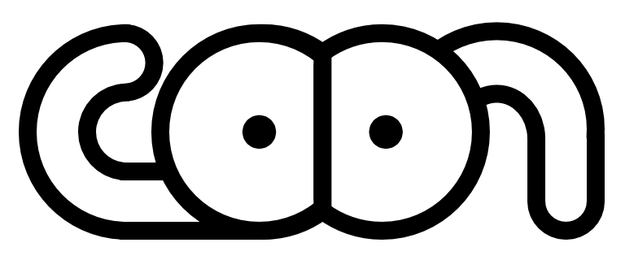
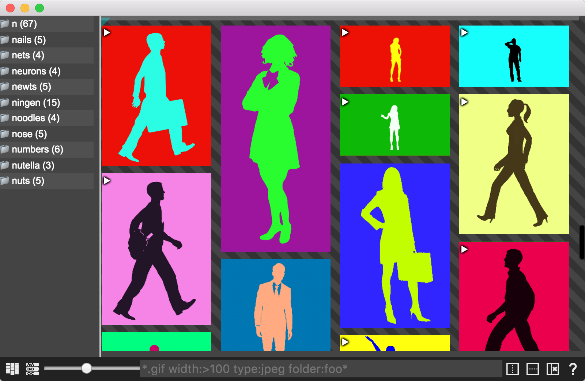
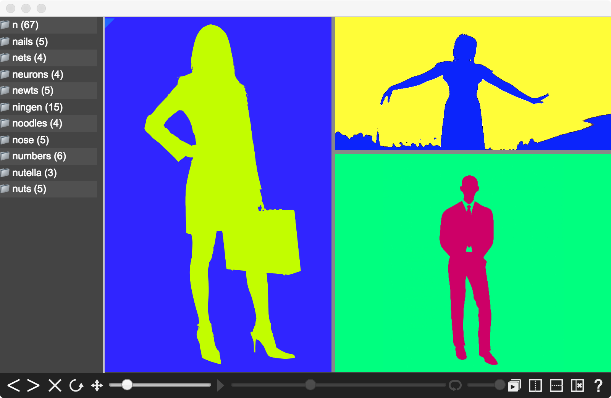
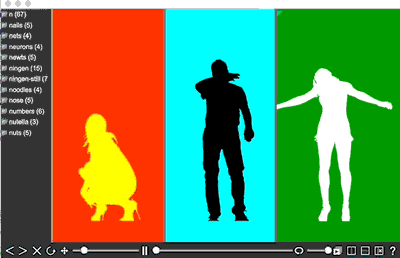
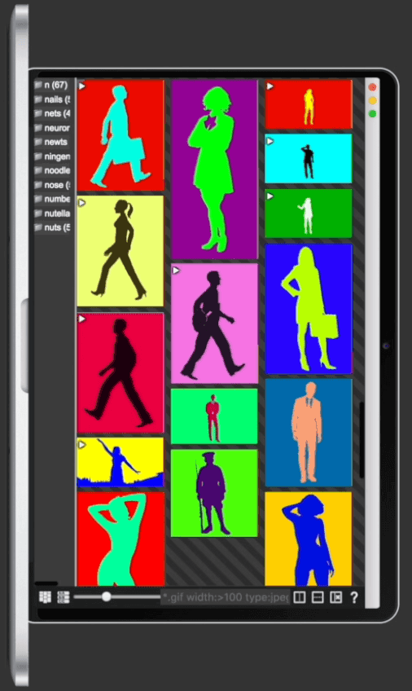
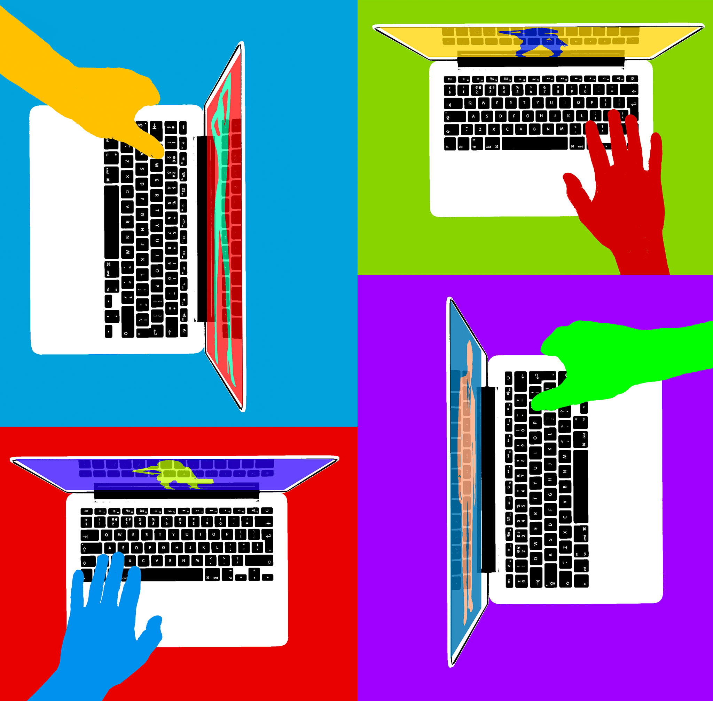

Goon is free and open source, and it is not code‑signed or notarized (Apple and Microsoft both charge money for that). So the very first time you open it, your operating system will refuse and show a scary warning. Nothing is wrong with the app - you just have to tell your OS you meant to run it. Here is exactly how.
Goon‑<version>.dmg,
then drag the Goon icon onto the Applications folder. Eject the disk image when it’s done.
Terminal, press Return.
Then paste this line exactly and press Return:
xattr -d -r com.apple.quarantine /Applications/Goon.appxattr -d -r com.apple.quarantine (with a trailing space), then
drag Goon.app from the Finder onto the Terminal window - it fills in the path for you.
Then press Return.
Goon.Setup.<version>.exe, and choose
Keep - then Keep anyway if it asks a second time.
Microsoft Defender SmartScreen prevented an unrecognized app from starting. Running this app might put your PC at risk.
More infoMicrosoft Defender SmartScreen prevented an unrecognized app from starting. Running this app might put your PC at risk.
Goon.Setup.<version>.exe → Properties →
General tab, tick Unblock at the bottom, click OK, then run it again.
Goon‑<version>.AppImage.
chmod +x Goon-*.AppImage./Goon-*.AppImagelibfuse.so.2?
Either install the old FUSE library (sudo apt install libfuse2, or
libfuse2t64 on newer Ubuntu/Debian), or skip FUSE entirely:
./Goon-*.AppImage --appimage-extract-and-runThis app does not collect any data. It does not do any network communication except for checking for updates by pinging github. You can turn this feature off in preferences if you prefer.